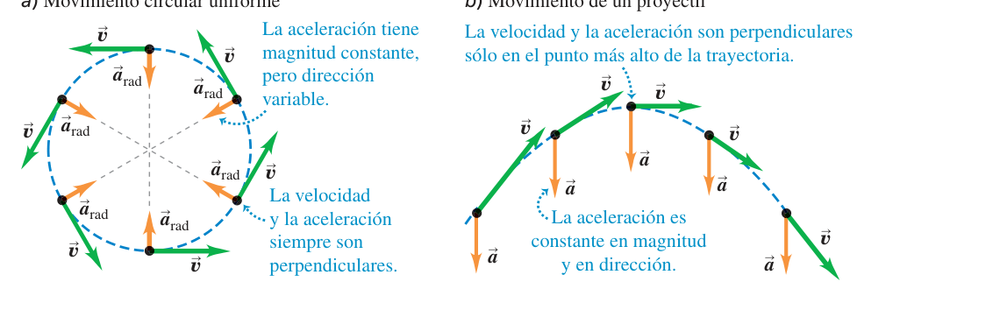
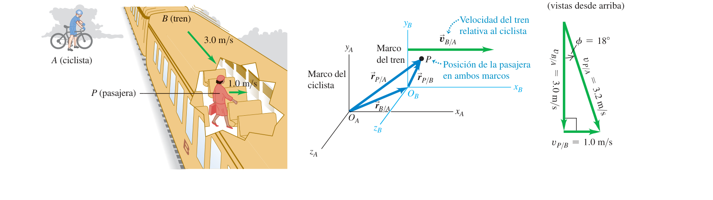

Movimiento en dos o en tres dimensiones
Todo lo del tema 2, pero ahora en un plano (o en el espacio): posición, velocidad y aceleración se convierten en vectores, y de ahí salen directamente los proyectiles, el movimiento circular y la velocidad relativa.
0Antes de empezar U p.67
Prerrequisitos: vectores y su descomposición en componentes (tema 1: suma, resta, módulo, ángulo con $\tan\theta=y/x$ cuidando el cuadrante) y todo el tema 2 (velocidad y aceleración como derivadas, las cuatro ecuaciones de aceleración constante) — aquí se repite exactamente el mismo patrón «media = cuerda/instantánea = tangente», pero componente a componente.
Mapa del tema: la sección 3.1 convierte posición y velocidad en vectores $\vec r(t)$, $\vec v(t)$ en 2D/3D (misma idea del tema 2, una copia por cada eje). La 3.2 introduce lo realmente nuevo del tema: descomponer la aceleración en una parte que cambia la rapidez y otra que cambia la dirección. Con eso en la mano, la 3.3 (proyectiles) y la 3.4 (círculo) son dos casos particulares y muy típicos de examen: en el proyectil la aceleración es constante en módulo y dirección; en el círculo uniforme es constante en módulo pero gira sin parar. La 3.5 cierra el tema con la velocidad relativa, primero en una dimensión (ya la intuyes del tema 2) y luego en el plano, que es donde de verdad aparece la suma vectorial.
De los exámenes revisados, hay 2 preguntas de teoría de este tema (proyectiles y movimiento circular) y 1 problema numérico (fragmentos de un cohete que caen tras una explosión en el punto más alto, mezclado con conservación de la cantidad de movimiento del tema 8). No es un tema con muchos problemas de examen en solitario, pero sus ideas — descomponer la aceleración, tratar los ejes por separado, sumar velocidades relativas — reaparecen constantemente en temas posteriores (Newton, energía, rotación).
1Vectores de posición y velocidad
En el tema 2 la posición era un solo número con signo, $x(t)$. Ahora, si el movimiento no es en línea recta, hace falta un vector: $\vec r(t)$ apunta desde el origen hasta donde está la partícula en cada instante. Lo bonito es que cada componente vive su propia vida: $x(t)$ no sabe nada de $y(t)$ ni de $z(t)$, cada una se deriva por separado como en el tema 2 — lo único que las conecta es que comparten el mismo reloj $t$. Esta idea de «componentes independientes, mismo tiempo» es la que hace posible resolver proyectiles descomponiendo en dos problemas 1D.
$$\vec r = x\hat\imath + y\hat\jmath + z\hat k$$
Durante un intervalo $\Delta t$ la partícula pasa de $\vec r_1$ a $\vec r_2$; el desplazamiento es $\Delta\vec r=\vec r_2-\vec r_1$, y la velocidad media es ese desplazamiento entre el tiempo transcurrido:
$$\vec v_{\text{med}} = \frac{\Delta\vec r}{\Delta t} = \frac{\vec r_2-\vec r_1}{t_2-t_1} \qquad\text{(ec. 3.2)}$$Es exactamente la misma idea que la ec. 2.2 del tema 2, componente a componente: la componente $x$ de la ec. 3.2 es justo $v_{\text{med-}x}=\Delta x/\Delta t$.
U p.67Igual que en el tema 2, la velocidad instantánea es el límite de la velocidad media cuando $\Delta t\to0$, es decir, la derivada del vector posición:
$$\vec v = \frac{d\vec r}{dt} \qquad\text{(ec. 3.3)}$$Como cada componente de $\vec r$ se deriva por separado,
$$v_x=\frac{dx}{dt}\quad v_y=\frac{dy}{dt}\quad v_z=\frac{dz}{dt} \qquad\text{(ec. 3.4)}$$y la rapidez (el módulo de $\vec v$) es $v=\sqrt{v_x^2+v_y^2+v_z^2}$ (ec. 3.6).
U p.68En cualquier instante, $\vec v$ es tangente a la curva que dibuja $\vec r(t)$ en ese punto — apunta en la dirección en la que se movería la partícula un instante después. Esto será clave en las secciones 3.3 y 3.4: la dirección de $\vec v$ define qué significa «paralelo» y «perpendicular» al movimiento.
U p.68Un vehículo tiene $x(t)=2.0\ \text{m}-(0.25\ \text{m/s}^2)t^2$, $y(t)=(1.0\ \text{m/s})t+(0.025\ \text{m/s}^3)t^3$. Derivando componente a componente (ec. 3.4), $v_x=-(0.50\ \text{m/s}^2)t$ y $v_y=1.0\ \text{m/s}+(0.075\ \text{m/s}^3)t^2$. En $t=2.0$ s: $v_x=-1.0$ m/s, $v_y=1.3$ m/s, así que $v=\sqrt{1.0^2+1.3^2}=1.6\ \text{m/s}$, con $\alpha=\arctan(v_y/v_x)$ corregido de cuadrante a $128°$ (38° al oeste del norte, porque $v_x<0$ y $v_y>0$ sitúan al vector en el segundo cuadrante).
El libro insiste en un matiz importante: la velocidad media en un intervalo (aquí, de $t=0$ a $t=2.0$ s) en general no coincide con la velocidad instantánea al final de ese intervalo — la misma advertencia que ya vimos con $x(t)$ en el tema 2, ahora también en $y(t)$.
U p.69Al calcular el ángulo con $\arctan(v_y/v_x)$, la calculadora solo da valores entre $-90°$ y $90°$: si el vector está en el segundo o tercer cuadrante (como en el ejemplo de arriba, $v_x<0$), hay que sumar $180°$ al resultado. Dibujar siempre el vector (aunque sea a mano alzada) antes de fiarte del arcotangente.
2El vector aceleración
Otra vez el mismo patrón: aceleración media = cambio de $\vec v$ entre el tiempo, aceleración instantánea = derivada de $\vec v$. Lo nuevo y realmente importante de este tema es qué significa geométricamente ese vector aceleración: se puede partir en un trozo paralelo a la velocidad (que solo cambia lo rápido que vas) y un trozo perpendicular (que solo cambia hacia dónde vas) — como pisar el acelerador/freno de un coche (componente paralela) frente a girar el volante (componente perpendicular).
Componente a componente, $a_x=dv_x/dt$, etc. (ec. 3.10) — de nuevo, cada eje se deriva por su cuenta.
U p.70$\vec a$ solo tiene la misma dirección que $\vec v$ si la trayectoria es recta en ese tramo; en cualquier trayectoria curva son direcciones distintas. Conviene descomponer $\vec a$ en dos direcciones tomando como referencia la propia $\vec v$:
- Componente paralela a $\vec v$ (equivalente a $a\cos\phi$ con $\phi$ el ángulo entre $\vec a$ y $\vec v$; en componentes, $a_\parallel=\vec a\cdot\vec v/v$): mide el cambio de rapidez. Si $a_\parallel>0$ el objeto acelera (en el sentido cotidiano); si $a_\parallel<0$, frena.
- Componente perpendicular a $\vec v$ ($a_\perp=\sqrt{a^2-a_\parallel^2}$): mide el cambio de dirección — si $a_\perp\ne0$, la trayectoria está girando (curvándose).
Casos límite: si $\vec a=\vec 0$, movimiento rectilíneo uniforme (tema 2 puro). Si $a_\parallel=0$ pero $a_\perp\ne0$, la rapidez no cambia pero la dirección sí — por ejemplo, el movimiento circular uniforme de la sección 3.4 (aunque cualquier curva recorrida a rapidez constante cumple esto, no solo el círculo). Si ambas componentes son distintas de cero, cambian a la vez la rapidez y la dirección (el caso general, y también el del movimiento circular no uniforme).
U p.73Pensar que «acelerar» solo significa ir más rápido. En física, cualquier cambio de $\vec v$ —incluido un simple giro con rapidez constante— es aceleración. Para saber si un objeto va más rápido/más lento, mira el signo de $\vec a\cdot\vec v$ (equivalente a $a_\parallel$); para saber si está girando, mira si $a_\perp\ne0$. Son dos preguntas independientes.
Un esquiador acelera cuesta abajo con $\vec a$ constante en módulo y dirección. En un instante dado, U descompone esa $\vec a$ respecto a la $\vec v$ de ese instante y obtiene $a_\parallel=0.54\ \text{m/s}^2$ (la componente que lo acelera, a favor de la pendiente) y $a_\perp=0.21\ \text{m/s}^2$ (la que curva ligeramente su trayectoria en ese punto). Es el mismo cálculo que en el ejercicio E1 más abajo, con la diferencia de que aquí $\vec a$ es constante y $\vec v$ va cambiando, así que $a_\parallel$ y $a_\perp$ cambian de un instante a otro aunque $\vec a$ no cambie.
U p.743Movimiento de proyectiles
Un proyectil (una pelota lanzada, una bala, un balón) tiene un movimiento que parece complicado en el aire, pero se vuelve trivial si lo separas en dos películas independientes reproducidas a la vez: en el eje $x$ nada cambia la velocidad (es tema 2 con $a=0$); en el eje $y$ hay caída libre pura (tema 2 con $a=-g$). Lo único que las conecta es que comparten el reloj $t$.
Se llama movimiento de proyectil a cualquier cuerpo que se lanza al aire y se mueve libremente bajo la acción de la gravedad, con estas simplificaciones: la aceleración es constante, $a_x=0$ y $a_y=-g$; se ignora la resistencia del aire; y se trata la Tierra como plana en la escala del problema (curvatura despreciable). Es el mismo tipo de modelo idealizado que la partícula puntual del tema 1: no es exacto, pero captura lo esencial y es tratable a mano.
U p.75Con velocidad inicial $v_0$ y ángulo $\alpha_0$ sobre la horizontal:
$$v_{0x}=v_0\cos\alpha_0 \qquad v_{0y}=v_0\sin\alpha_0 \qquad\text{(ec. 3.18)}$$Posición en cualquier instante (dos ecuaciones separadas, unidas solo por $t$):
$$x=x_0+(v_0\cos\alpha_0)t \qquad\text{(ec. 3.19)}$$ $$y=y_0+(v_0\sin\alpha_0)t-\tfrac12gt^2 \qquad\text{(ec. 3.20)}$$Velocidad en cualquier instante:
$$v_x=v_0\cos\alpha_0 \qquad\text{(ec. 3.21, constante)}$$ $$v_y=v_0\sin\alpha_0-gt \qquad\text{(ec. 3.22)}$$La rapidez y la dirección en cualquier instante salen de combinar las dos componentes: $v=\sqrt{v_x^2+v_y^2}$ y $\tan\alpha=v_y/v_x$, exactamente igual que en la sección 3.1 (ecs. 3.23-3.25). Eliminando $t$ entre las ecs. 3.19-3.20 (despejando $t=x/(v_0\cos\alpha_0)$ de la primera y sustituyendo en la segunda) se obtiene la trayectoria $y(x)$, que es una parábola:
$$y=(\tan\alpha_0)\,x-\frac{g}{2v_0^2\cos^2\alpha_0}\,x^2 \qquad\text{(ec. 3.26)}$$ U p.76Antes de escribir ninguna cuenta, descompón $v_0$ en $v_{0x}$ y $v_{0y}$ y trabaja cada eje aparte: $x$ es tema 2 con $a=0$ (velocidad constante); $y$ es tema 2 con $a=-g$ (caída libre). No mezcles las dos ecuaciones salvo para usar el mismo $t$. Es, con diferencia, el error de examen más común no hacerlo desde la primera línea.
«Punto más alto» significa siempre $v_y=0$ (no $v=0$: en la cima sigue habiendo $v_x=v_0\cos\alpha_0\ne0$, el proyectil no se para en el aire). Con la ec. 3.22, eso ocurre en $t_1=v_0\sin\alpha_0/g$, y sustituyendo en la ec. 3.20 sale la altura máxima. Si además el punto de lanzamiento y el de llegada están a la misma altura (caso simétrico), por simetría de la parábola el tiempo total de vuelo es $t_2=2t_1$, y sustituyendo en la ec. 3.19 sale el alcance:
$$h=\frac{v_0^2\sin^2\alpha_0}{2g} \qquad R=\frac{v_0^2\sin2\alpha_0}{g}$$El alcance $R$ es máximo cuando $\sin2\alpha_0=1$, es decir, para $\alpha_0=45°$; y dos ángulos complementarios ($\alpha_0$ y $90°-\alpha_0$) dan siempre el mismo alcance, porque $\sin2\alpha_0=\sin(2(90°-\alpha_0))$.
U p.80Las fórmulas de $h$ y $R$ de la caja anterior solo valen si el lanzamiento y la llegada están a la misma altura. Si el proyectil sale desde una ventana o cae a un nivel distinto (por ejemplo, lanzado desde un tejado hacia la calle), hay que volver a las ecuaciones generales 3.19-3.22 y resolver con las alturas reales de salida y llegada — es justo lo que hace U en el Ejemplo 3.9 (una pelota lanzada desde una ventana, con llegada más abajo que la salida). Memorizar $R=v_0^2\sin2\alpha_0/g$ sin comprobar esta condición es una fuente constante de errores.
U p.81Como curiosidad que ilustra muy bien el modelo: un dardo apuntado directamente a un mono que se suelta de una rama en el instante del disparo siempre lo alcanza, sin importar la velocidad del dardo (siempre que el mono no llegue al suelo antes de que el dardo lo alcance). La razón es la misma idea central de esta sección: en todo instante, cualquier proyectil ha «caído» exactamente $\tfrac12gt^2$ por debajo de la línea recta que seguiría si no existiera la gravedad — y esa caída es igual para el dardo que para el mono, que también cae en caída libre desde que se suelta.
U p.814Movimiento en un círculo
Piensa en un coche tomando una curva a velocidad constante: el velocímetro no cambia, pero claramente está acelerando porque cambia de dirección todo el rato. Esa aceleración, en el caso de rapidez constante (movimiento circular uniforme, MCU), apunta siempre hacia el centro del círculo — de ahí el nombre «centrípeta» («que busca el centro»).
Es el movimiento de una partícula que recorre una trayectoria circular con rapidez constante. Como la rapidez no cambia, la componente paralela de la aceleración (sección 3.2) es nula: toda la aceleración es perpendicular a $\vec v$, es decir, puramente radial.
U p.82Con el periodo $T$ (tiempo de una vuelta completa), la rapidez es $v=2\pi R/T$ (ec. 3.28), y sustituyendo:
$$a_{\text{rad}}=\frac{4\pi^2R}{T^2} \qquad\text{(ec. 3.29)}$$La deducción (comparando triángulos semejantes formados por $\vec v$ y $\Delta\vec v$ frente al radio y el arco recorrido) es la misma idea de «límite de una cuerda que se convierte en tangente» que ya usamos para definir velocidad y aceleración instantáneas.
U p.83
En una trayectoria curva, $\vec a$ y $\vec v$ nunca pueden tener la misma dirección (si la tuvieran, la trayectoria sería recta). En el MCU, $\vec a$ es siempre perpendicular a $\vec v$; en el proyectil, solo lo es en el punto más alto. Fuera de ese punto, $\vec a$ (constante, hacia abajo) tiene una componente paralela a $\vec v$ que cambia la rapidez y otra perpendicular que curva la trayectoria — exactamente el criterio de la sección 3.2.
U p.84Si además la rapidez cambia con el tiempo, aparece también una componente tangencial de la aceleración:
$$a_{\text{tan}}=\frac{d|\vec v|}{dt} \qquad\text{(ec. 3.30)}$$junto con la componente radial de siempre, $a_{\text{rad}}=v^2/R$ (que ahora usa la rapidez instantánea). El módulo total de la aceleración es $a=\sqrt{a_{\text{rad}}^2+a_{\text{tan}}^2}$.
U p.85$a_{\text{tan}}=d|\vec v|/dt$ (cuánto cambia la rapidez, un escalar) no es lo mismo que $|d\vec v/dt|=|\vec a|$ (el módulo de todo el vector aceleración, que incluye también el giro). En el MCU puro, $d|\vec v|/dt=0$ porque la rapidez no cambia, pero $|\vec a|=a_{\text{rad}}\ne0$ porque sí está girando.
5Velocidad relativa
Si vas en un tren a 3.0 m/s y caminas por el pasillo a 1.0 m/s en el sentido de la marcha, alguien parado en el andén te ve moverte a 4.0 m/s: tu velocidad depende de quién mira. Esa es la velocidad relativa: no hay una única «velocidad verdadera», solo velocidades relativas a un observador (marco de referencia) concreto.
Un marco de referencia es un sistema de coordenadas (un origen y unos ejes) junto con una escala de tiempo, respecto al cual se miden posiciones, velocidades y aceleraciones. Toda velocidad es relativa a un marco concreto: no tiene sentido preguntar «¿cuál es la velocidad de este coche?» sin decir respecto a qué (¿al suelo? ¿a otro coche?).
U p.86Léase «la velocidad de $P$ relativa a $A$ es la velocidad de $P$ relativa a $B$ más la velocidad de $B$ relativa a $A$» — los subíndices se comportan casi como una fracción que se simplifica: $P/A=(P/B)(B/A)$. Además, invertir el orden de los dos marcos cambia el signo:
$$v_{A/B,x}=-v_{B/A,x} \qquad\text{(ec. 3.33)}$$ U p.86La misma idea con vectores completos (transformación galileana de la velocidad):
$$\vec v_{P/A}=\vec v_{P/B}+\vec v_{B/A} \qquad\text{(ec. 3.35)}$$Aquí ya no basta con sumar y restar números: hay que sumar vectores (por componentes, o con un diagrama y trigonometría). Si las tres velocidades están en la misma recta, esta ecuación se reduce a la 3.32. Igual que en 1D, invertir el orden cambia el signo: $\vec v_{A/B}=-\vec v_{B/A}$ (ec. 3.36).
Esta suma sencilla de velocidades (transformación de Galileo) deja de ser válida a velocidades cercanas a la de la luz, donde hace falta la relatividad especial — fuera del alcance de esta asignatura, pero conviene saber que el modelo tiene un límite.
U p.88
Un avión vuela con rumbo norte (respecto al aire) a $v_{P/A}=240$ km/h, y sopla un viento del oeste al este $v_{A/E}=100$ km/h (aquí «$A$» es el aire y «$E$» la Tierra). Por la ec. 3.35, $\vec v_{P/E}=\vec v_{P/A}+\vec v_{A/E}$: dos vectores perpendiculares que se suman con Pitágoras, $v_{P/E}=\sqrt{240^2+100^2}=260$ km/h, desviado $\arctan(100/240)=22.6°$ al este del norte respecto al rumbo que marca la brújula — el viento arrastra al avión aunque apunte exactamente al norte.
El Ejemplo 3.15 resuelve el problema inverso: ¿en qué dirección debe apuntar el piloto (misma rapidez respecto al aire, 240 km/h) para que su velocidad resultante sea exactamente hacia el norte? Ahora el triángulo vectorial se arma al revés (se fija $\vec v_{P/E}$ en dirección norte y se busca el ángulo de $\vec v_{P/A}$ que, sumado a los 100 km/h del viento, lo consigue): la respuesta es apuntar 25° al oeste del norte, con una rapidez resultante sobre el suelo de 218 km/h — inferior a los 240 km/h porque parte del esfuerzo del avión ahora se usa en contrarrestar el viento, no en avanzar.
U p.89En un problema de velocidad relativa en el plano, identifica primero qué vector conoces por completo (magnitud y dirección) y cuál tiene una incógnita en la magnitud y otra en el ángulo (o viceversa); casi siempre se puede armar un triángulo rectángulo (si las dos velocidades «base» son perpendiculares, como el viento cruzado) y resolver con Pitágoras y arcotangente, sin necesidad de descomponer en $x,y$ desde el principio.
6Ejercicios resueltos
Empezamos con cuatro ejercicios del solucionario sobre vectores/proyectiles (E1-E4), seguimos con los dos ejercicios de examen real de teoría (X1, X2 — proyectiles y círculo), un problema de examen mixto con el tema 8 (X3), y cerramos con uno de MCU y uno de velocidad relativa del solucionario (E5, E6).
E1 — Problema 3.7: aceleración de un ave, ¿acelera o gira? E
Las coordenadas de un ave que vuela en el plano $xy$ son $x(t)=\alpha t$ e $y(t)=3.0\ \text{m}-\beta t^2$, con $\alpha=2.4$ m/s y $\beta=1.2$ m/s². a) Dibuje la trayectoria del ave entre $t=0$ y $t=2.0$ s. b) Calcule los vectores velocidad y aceleración del ave en función del tiempo. c) Obtenga el módulo y la dirección de la velocidad y de la aceleración en $t=2.0$ s. d) En ese instante, ¿el ave acelera, frena o su rapidez no cambia? ¿Está girando? Si es así, ¿hacia dónde?
- a) Eliminando $t=x/\alpha$ y sustituyendo en $y$, la trayectoria es la parábola $y=3.0-(\beta/\alpha^2)x^2$: parte de $(0;\,3.0)$ m en $t=0$ y baja hasta $(4.8;\,-1.8)$ m en $t=2.0$ s.
- b) Derivando componente a componente (sección 3.1): $v_x=\alpha=2.4$ m/s (constante), $v_y=-2\beta t=-2.4t$. Derivando otra vez: $a_x=0$, $a_y=-2\beta=-2.4\ \text{m/s}^2$ (constante) — es formalmente idéntico a un proyectil, con $x$ uniforme e $y$ acelerada.
- c) En $t=2.0$ s: $v_x=2.4$, $v_y=-4.8$ m/s, así que $v=\sqrt{2.4^2+4.8^2}=5.37$ m/s, con dirección $\theta=\arctan(-4.8/2.4)=-63.4°$ (por debajo del eje $x$). La aceleración es $\vec a=(0,-2.4)$ m/s², constante en todo instante, dirección $-y$.
- d) Descomponemos $\vec a$ en paralela/perpendicular a $\vec v$ (sección 3.2): $a_\parallel=\dfrac{\vec a\cdot\vec v}{v}=\dfrac{0(2.4)+(-2.4)(-4.8)}{5.37}=+2.15\ \text{m/s}^2$. Como es positiva, el ave está acelerando (aumentando su rapidez) en ese instante. Además, $a_\perp=\sqrt{a^2-a_\parallel^2}=\sqrt{2.4^2-2.15^2}=1.07\ \text{m/s}^2\ne0$, así que también está girando. La componente $z$ de $\vec v\times\vec a$, $v_xa_y-v_ya_x=(2.4)(-2.4)-(-4.8)(0)=-5.76<0$, indica que gira hacia $-y$ (a la derecha de su dirección de avance).
E2 — Problema 3.12: mariscal de campo (proyectil clásico) E
Un mariscal de campo novato lanza un balón con una componente de velocidad inicial hacia arriba de 12.0 m/s y una componente horizontal de 20.0 m/s. Desprecie la resistencia del aire. a) ¿Cuánto tarda el balón en llegar al punto más alto de la trayectoria? b) ¿A qué altura está ese punto? c) ¿Cuánto tiempo pasa, desde el lanzamiento, hasta que el balón vuelve a su nivel original? ¿Cómo se compara con el de a)? d) ¿Qué distancia horizontal recorre en ese tiempo?
- a) «Punto más alto» = $v_y=0$: con la ec. 3.22, $0=v_{0y}-gt_1 \Rightarrow t_1=v_{0y}/g=12.0/9.80=1.22$ s.
- b) Altura máxima: $h=v_{0y}^2/(2g)=12.0^2/(2\times9.80)=7.35$ m.
- c) Al volver a su nivel original se cumple $y=0$; por la simetría de la parábola (subida y bajada duran lo mismo cuando se llega a la misma altura de salida), ese instante es el doble del tiempo de subida: $t=2t_1=2.45$ s — el doble que en a).
- d) Alcance horizontal en ese tiempo: como $v_x$ es constante, $R=v_{0x}\,t=20.0\times2.45=49.0$ m.
E3 — Problema 3.9: libro empujado desde una mesa (lanzamiento horizontal) E
Un libro se desliza fuera de una mesa horizontal con $v_0=1.10$ m/s y golpea el suelo en $t=0.480$ s. Calcula a) la altura de la mesa, b) la distancia horizontal recorrida hasta el impacto, y c) las componentes horizontal y vertical de la velocidad, y la rapidez y el ángulo de la velocidad justo al llegar al suelo.
- Es un lanzamiento horizontal: $v_{0y}=0$, así que la caída vertical es idéntica a una caída libre desde el reposo. a) $h=\tfrac12gt^2=\tfrac12(9.80)(0.480)^2=1.13$ m.
- b) Como $v_x=v_0=1.10$ m/s es constante, $x=v_0t=1.10\times0.480=0.528$ m.
- c) $v_x$ no cambia: $v_x=1.10$ m/s. $v_y=-gt=-9.80\times0.480=-4.70$ m/s. Rapidez $v=\sqrt{1.10^2+4.70^2}=4.83$ m/s, con ángulo $\arctan(4.70/1.10)=76.8°$ bajo la horizontal.
E4 — Problema 3.16: proyectil lanzado a 60° E
Se lanza un proyectil con $v_0=40.0$ m/s a $60.0°$ sobre la horizontal desde el nivel del suelo. Calcula a) las componentes de $v_0$; b) el tiempo hasta el punto más alto; c) la altura máxima; d) el alcance horizontal; e) las componentes horizontal y vertical de su aceleración y de su velocidad en el punto de altura máxima.
- a) $v_{0x}=40.0\cos60°=20.0$ m/s; $v_{0y}=40.0\sin60°=34.6$ m/s.
- b) $t_1=v_{0y}/g=34.6/9.80=3.53$ s.
- c) $h=v_{0y}^2/(2g)=34.6^2/(2\times9.80)=61.2$ m.
- d) Salida y llegada a la misma altura, así que $R=v_0^2\sin(2\times60°)/g=40.0^2\sin120°/9.80=141$ m (coincide con $2v_{0x}t_1=2\times20.0\times3.53=141$ m).
- e) En la cima, $v_x=20.0$ m/s (nunca cambia) y $v_y=0$ (por definición de «punto más alto»); la aceleración sigue siendo $\vec a=(0,-9.80)\ \text{m/s}^2$, exactamente igual que en cualquier otro instante del vuelo.
X1 — Teoría: Movimiento de proyectiles X
Desarrolle el tema: Movimiento de proyectiles. Además, responda a las siguientes cuestiones: (a) Un tirador olímpico dispara una bala horizontalmente con su pistola errando el tiro su objetivo, al mismo tiempo deja caer otra bala desde la altura del cañón de la pistola. Si no hay resistencia del aire, ¿qué bala llegará primero al suelo? Explique su respuesta. (b) Un pájaro que vuela en línea recta con altitud y módulo de velocidad constantes deja caer una semilla de su pico. Si se ignora la resistencia del aire, ¿qué trayectoria de la semilla observaría el pájaro? ¿Y una persona situada en el suelo?
- El modelo. Un proyectil es un cuerpo que se mueve libremente bajo la gravedad, con $a_x=0$, $a_y=-g$, despreciando la resistencia del aire y la curvatura terrestre (sección 3.3).
- La idea central. Los movimientos horizontal y vertical son completamente independientes y solo están conectados por compartir el mismo instante $t$: $x=x_0+v_{0x}t$ (velocidad constante) e $y=y_0+v_{0y}t-\tfrac12gt^2$ (caída libre), con $v_{0x}=v_0\cos\alpha_0$, $v_{0y}=v_0\sin\alpha_0$ (ecs. 3.18-3.20).
- Magnitudes derivadas. En cualquier instante, $v=\sqrt{v_x^2+v_y^2}$ y el ángulo de la velocidad sale de $\tan\alpha=v_y/v_x$; eliminando $t$ entre $x(t)$ e $y(t)$ se obtiene la trayectoria, que es una parábola (ec. 3.26).
- Altura máxima y alcance. Si salida y llegada están a la misma altura, $h=v_0^2\sin^2\alpha_0/(2g)$ y $R=v_0^2\sin2\alpha_0/g$; si no, hay que resolver con las ecuaciones generales usando las alturas reales (sección 3.3).
- Comparación con el MCU. En el proyectil, $\vec a$ es constante en módulo y dirección (siempre $-g\hat\jmath$), y solo es perpendicular a $\vec v$ en el punto más alto; en el movimiento circular uniforme (sección 3.4), $\vec a$ tiene módulo constante pero dirección que gira sin parar, siempre perpendicular a $\vec v$ (fig. 3.29).
- Límites del modelo. Con resistencia del aire (no despreciable a alta velocidad, p. ej. una bala de verdad o un paracaidista) la trayectoria deja de ser una parábola simétrica y hay que resolver ecuaciones diferenciales más complejas; el modelo de esta sección es una idealización útil, no una descripción exacta.
- a) ¿Cuál llega antes? Llegan a la vez. Ambas balas tienen la misma $v_{0y}=0$ y parten de la misma altura, así que su movimiento vertical es idéntico, $y(t)=h-\tfrac12gt^2$, completamente independiente de que una tenga velocidad horizontal y la otra no. La bala disparada solo llega más lejos (mayor $x$), nunca más tarde ni más pronto.
- b) Dos observadores, dos trayectorias. Para el observador en tierra, la semilla sale con $v_{0x}=v_{\text{pájaro}}$ y $v_{0y}=0$: es un lanzamiento horizontal clásico, y su trayectoria es una parábola. Para el propio pájaro, hay que usar la velocidad relativa (ec. 3.35): $\vec v_{\text{semilla/pájaro}}=\vec v_{\text{semilla/tierra}}-\vec v_{\text{pájaro/tierra}}$. La componente horizontal es siempre $v_{\text{pájaro}}-v_{\text{pájaro}}=0$ (el pájaro vuela a velocidad constante, igual que la componente horizontal de la semilla), así que el pájaro ve caer la semilla en línea recta vertical, justo debajo de él, con aceleración $-g$ — como una caída libre pura.
X2 — Teoría: Movimiento en círculo X
Desarrolle el tema: Movimiento en círculo. Además, responda a las siguientes cuestiones: (a) En un movimiento circular uniforme, ¿Cómo varía la aceleración radial cuando la velocidad tangencial aumenta cinco veces? Y ¿Cómo varía la aceleración radial si el radio de curvatura se reduce a un tercio de su valor inicial? (b) ¿Cuánto vale la velocidad tangencial media en un giro completo de un movimiento circular uniforme? Razone la respuesta.
- Idea de partida. En cualquier trayectoria curva hay aceleración aunque la rapidez sea constante, porque la dirección de $\vec v$ cambia (sección 3.2). El movimiento circular uniforme (MCU) es el caso particular con rapidez constante en un círculo.
- Dirección de la aceleración en el MCU. Es puramente radial (perpendicular a $\vec v$), siempre apuntando hacia el centro — de ahí el nombre «centrípeta».
- Deducción geométrica de $a_{\text{rad}}=v^2/R$. Comparando el triángulo formado por $\vec v_1,\vec v_2,\Delta\vec v$ con el triángulo formado por las posiciones y el radio (triángulos semejantes, ambos con ángulo $\Delta\phi$), se llega a $|\Delta\vec v|/v_1=\Delta s/R$; dividiendo entre $\Delta t$ y tomando el límite $\Delta t\to0$ se obtiene $a_{\text{rad}}=v^2/R$ (ec. 3.27).
- En función del periodo. Con $v=2\pi R/T$ (ec. 3.28), sustituyendo se obtiene $a_{\text{rad}}=4\pi^2R/T^2$ (ec. 3.29).
- Comparación con el proyectil. A diferencia del proyectil (aceleración constante en módulo y dirección), en el MCU el módulo de $\vec a$ es constante pero su dirección gira continuamente; $\vec v\perp\vec a$ en todo instante (no solo en un punto, como en el proyectil).
- Movimiento circular no uniforme. Si además cambia la rapidez, aparece una componente tangencial $a_{\text{tan}}=d|\vec v|/dt$ (ec. 3.30), y el módulo total es $\sqrt{a_{\text{rad}}^2+a_{\text{tan}}^2}$.
- a) Cómo varía $a_{\text{rad}}$. Como $a_{\text{rad}}=v^2/R$: si $v\to5v$ con $R$ fijo, $a_{\text{rad}}\to5^2=25$ veces la original. Si $R\to R/3$ con $v$ fija, $a_{\text{rad}}\to3$ veces la original (proporcional a $1/R$).
- b) Velocidad tangencial media en una vuelta completa. Depende de qué «media» se pida: si es la velocidad media vectorial (ec. 3.2, $\Delta\vec r/\Delta t$), es cero, porque tras una vuelta completa la partícula vuelve exactamente al punto de partida ($\Delta\vec r=\vec 0$). Si en cambio se pide la rapidez media (distancia recorrida entre tiempo, siempre positiva), es igual a la rapidez constante del MCU, $v=2\pi R/T$, porque la distancia recorrida en una vuelta es la circunferencia $2\pi R$.
X3 — Fragmentos de un cohete de fuegos artificiales X
Un cohete de fuegos artificiales se dispara verticalmente hacia arriba. En su altura máxima de 80 m, estalla y se divide en dos fragmentos, uno con masa de 1.40 kg y otro con masa de 0.28 kg. En la explosión, 860 J de energía química se convierte en energía cinética de los dos fragmentos. a) (Tema 8: conservación de la cantidad de movimiento) Con esos datos se obtiene que los fragmentos salen despedidos con $v_A=14.3$ m/s y $v_B=71.5$ m/s (se comprueba que $m_Av_A=m_Bv_B=20.0$ kg·m/s, cantidad de movimiento conservada en sentidos opuestos). b) Se observa que los dos fragmentos caen al suelo al mismo tiempo. ¿Qué distancia hay entre los puntos en los que caen? Suponga que el suelo es horizontal y que la resistencia del aire es despreciable.
- El apartado a) es del tema 8 (colisiones/explosiones): se resuelve con conservación de la cantidad de movimiento total (nula antes de estallar, porque el cohete estaba momentáneamente parado en su punto más alto) junto con la energía cinética liberada; el resultado, $v_A=14.3$ m/s y $v_B=71.5$ m/s, se toma aquí como dato de partida para centrarnos en el apartado b), que sí es de este tema.
- Por qué las velocidades de salida son horizontales. Conservar la cantidad de movimiento vertical solo dice que $m_Av_{Ay}+m_Bv_{By}=0$ — por sí sola, esa ecuación permitiría que un fragmento saliera hacia arriba y el otro hacia abajo, no obliga a que ninguno de los dos sea cero. El dato que cierra el argumento es el del enunciado: los dos caen al suelo al mismo tiempo. Como ambos parten de la misma altura $h=80$ m, y el tiempo de caída de un proyectil depende solo de $v_{0y}$ y $h$ (no de la velocidad horizontal), «mismo tiempo de caída» obliga a que los dos tengan la misma $v_{0y}$. Llamando $v_{0y}$ a ese valor común, la conservación vertical queda $m_Av_{0y}+m_Bv_{0y}=(m_A+m_B)v_{0y}=0$, y como $m_A+m_B\ne0$, forzosamente $v_{0y}=0$ para los dos. Solo entonces sus velocidades de salida son puramente horizontales, en sentidos opuestos (para que la componente horizontal, también nula al principio, se conserve).
- Con $v_{0y}=0$ para los dos, cada fragmento cae como un lanzamiento horizontal (sección 3.3) desde $h=80$ m: $t=\sqrt{2h/g}=\sqrt{2(80)/9.80}=4.04$ s — el mismo tiempo para ambos, como ya exigía el enunciado.
- Distancia horizontal de cada uno (sin redondear las velocidades intermedias, $v_A=14.31$, $v_B=71.55$ m/s): $x_A=v_At=14.31\times4.04=57.8$ m; $x_B=v_Bt=71.55\times4.04=288.9$ m.
- Como los fragmentos salen en sentidos opuestos, la separación entre los dos puntos de caída es la suma de ambas distancias: $D=x_A+x_B=57.8+288.9\approx347$ m.
E5 — Problema 3.24: aceleración centrípeta de un bailarín E
Un bailarín de ballet gira sobre un eje vertical a 3.0 revoluciones por segundo. La distancia de su oído interno al eje de giro es de 7.0 cm. Calcula la aceleración centrípeta de su oído interno, y exprésala como múltiplo de $g$.
- Frecuencia $f=3.0$ rev/s, así que el periodo es $T=1/f=0.333$ s. Radio $R=0.070$ m.
- Con la ec. 3.29: $a_{\text{rad}}=4\pi^2R/T^2=4\pi^2(0.070)/(0.333)^2=24.9\ \text{m/s}^2$.
- Como múltiplo de $g$: $24.9/9.80\approx2.5\,g$.
E6 — Problema 3.32: remero contra caminante, velocidad relativa en un río E
Dos muelles, A y B, están situados en un río; B está 1500 m río abajo de A. Dos amigos deben ir de A a B y regresar. Uno rema su bote con rapidez constante de 4.00 km/h relativa al agua; el otro camina por la orilla con rapidez constante de 4.00 km/h. La velocidad del río es 2.80 km/h en la dirección de A a B. ¿Cuánto tardará cada persona en hacer el viaje de ida y vuelta?
- Remero, tramo río abajo (a favor de la corriente): con la ec. 3.32, $v=4.00+2.80=6.80$ km/h respecto a tierra. Tiempo: $t_1=1.50/6.80=0.221$ h.
- Remero, tramo río arriba (en contra): $v=4.00-2.80=1.20$ km/h. Tiempo: $t_2=1.50/1.20=1.25$ h.
- Tiempo total del remero: $t_1+t_2=1.47$ h $=88.2$ min.
- Caminante: siempre a 4.00 km/h en tierra firme, sin corriente que le afecte. Recorre $2\times1.50=3.00$ km en total: $t=3.00/4.00=0.750$ h $=45.0$ min.
- El remero tarda casi el doble. No es una compensación simétrica: pasa mucho más tiempo en el tramo lento (río arriba, a solo 1.20 km/h) del que gana en el tramo rápido (río abajo, a 6.80 km/h) — el tiempo perdido a baja velocidad pesa más que el tiempo ganado a alta velocidad.
7Chuleta y lista de comprobación
| Concepto | Fórmula |
|---|---|
| Posición, velocidad | $\vec r=x\hat\imath+y\hat\jmath+z\hat k$; $\vec v=d\vec r/dt$, componente a componente (ec. 3.2-3.6) |
| Aceleración: paralela/perpendicular | $a_\parallel=\vec a\cdot\vec v/v$ (cambia rapidez); $a_\perp=\sqrt{a^2-a_\parallel^2}$ (cambia dirección) |
| Proyectiles | $x=x_0+v_0\cos\alpha_0\,t$; $y=y_0+v_0\sin\alpha_0\,t-\tfrac12gt^2$; $v_x=v_0\cos\alpha_0$; $v_y=v_0\sin\alpha_0-gt$ (ec. 3.18-3.22) |
| Altura máxima / alcance (misma altura salida-llegada) | $h=v_0^2\sin^2\alpha_0/(2g)$; $R=v_0^2\sin2\alpha_0/g$ |
| Movimiento circular | $a_{\text{rad}}=v^2/R=4\pi^2R/T^2$ (ec. 3.27-3.29); si no uniforme, $+\,a_{\text{tan}}=d|\vec v|/dt$ (ec. 3.30) |
| Velocidad relativa 1D | $v_{P/A,x}=v_{P/B,x}+v_{B/A,x}$; $v_{A/B,x}=-v_{B/A,x}$ (ec. 3.32-3.33) |
| Velocidad relativa 2D/3D | $\vec v_{P/A}=\vec v_{P/B}+\vec v_{B/A}$ (ec. 3.35), suma vectorial |
- Sé derivar $\vec r(t)$ dos veces para obtener $\vec v(t)$ y $\vec a(t)$ en 2D/3D, componente a componente.
- Sé descomponer $\vec a$ en paralela y perpendicular a $\vec v$, e interpretar si el objeto acelera y/o gira.
- Sé resolver un problema de proyectiles completo (altura máxima, alcance, velocidad final), incluyendo el caso en que salida y llegada están a distinta altura.
- Sé aplicar $a_{\text{rad}}=v^2/R$, tanto con $v$ directamente como en función del periodo $T$.
- Sé plantear un problema de velocidad relativa en una dimensión (suma algebraica) y en dos dimensiones (suma vectorial, triángulo rectángulo).